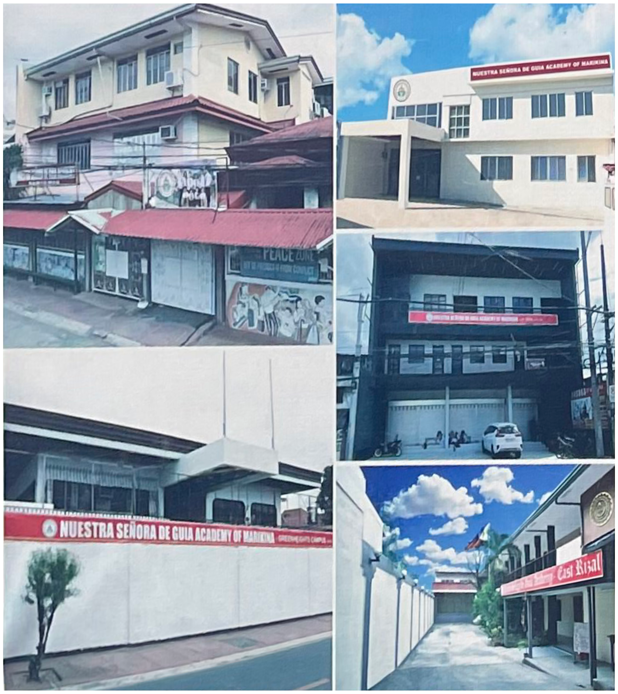
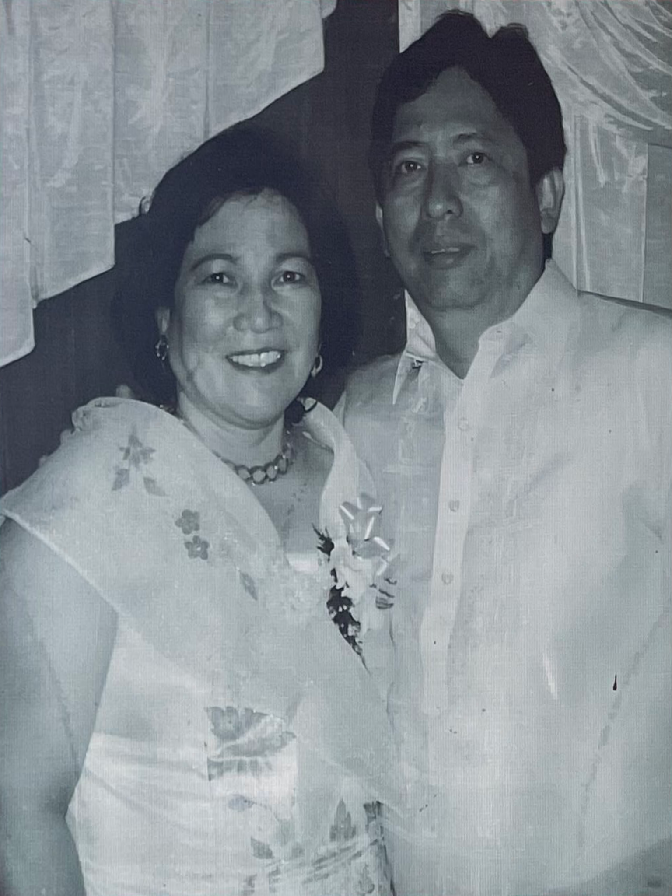

Putting up a school that will provide quality education at an affordable rate has been the lifelong dream of the indefatigable Mrs. Guia B. Urrutia, the School’s Executive Vice President. With the full support of her husband, the generous Engr. Felipe C. Urrutia, and Sir Philip and Ma’am Ging, as both were affectionately called; they knew what they wanted for the school. As a devotee of the Virgin of Ermita Church, Nuestra Señora De Guia, Ma’am Ging deemed it fit to name her school the same.
With an initial enrollment of FOURTEEN (14) pupils and a teacher, the school started operating for the S.Y. 1999–2000. From there the school never looked back. Enrollment has grown by leaps and bounds each year, the school adds another level. As of S.Y. 2012–2013, in addition to offering complete pre-elementary and elementary levels, the school commenced offering the complete high school level.
In response to the call of the government in the implementation of the K to 12 Program, Nuestra Señora De Guia Academy of Marikina successfully gained accreditation to participate in the Education Service Contracting (ESC) program institution and commenced its Senior High School (SHS) program at the start of S.Y. 2016–2017. This paved the way for the establishment of its first Annex Campus located at #98 Soliven Street, Marikina Greenheights Subdivision Phase 3, Nangka, Marikina City to accommodate the SHS population.
Committed to the delivery of quality education at affordable rates, the school continues to improve the quality of instruction. Aside from the core competencies, the school has deemed it appropriate to include early computer education for all levels to prepare the students for the digital age. In addition, the school has also put up a speech laboratory to hone the students, specifically from Grade 6 to Junior High School, in the mastery of the English language. On SY 2019–2020, Nuestra Señora De Guia Academy of Marikina opened its doors to the people of Angono and nearby municipalities from Eastern Rizal.
To address the ever-growing number of SHS students flocking to the school, two (2) additional annex campuses were opened beginning SY 2023–2024. These are located on a new building along J.P. Rizal Street in Barangay Nangka, and a newly-refurbished building along C.M. Recto Extension Street in Barangay Parang, both within Marikina City. Future plans are in place to invest in additional similar school plants and facilities to cater to the growing needs of the school community.
With faith and inspiration from the Blessed Virgin Mary, Nuestra Señora De Guia Academy of Marikina looks forward to serving the community and the country for years to come.

